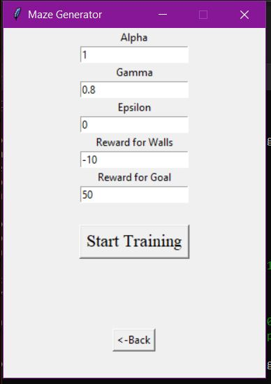
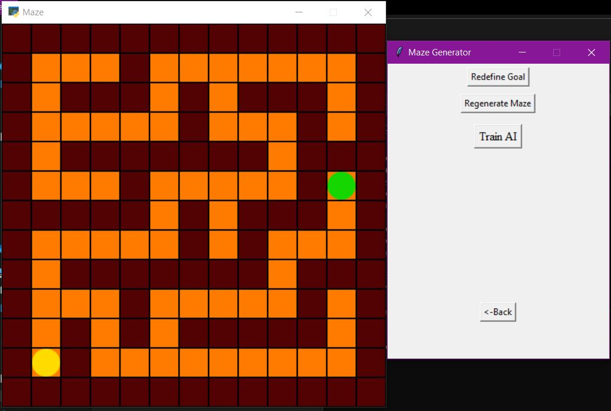
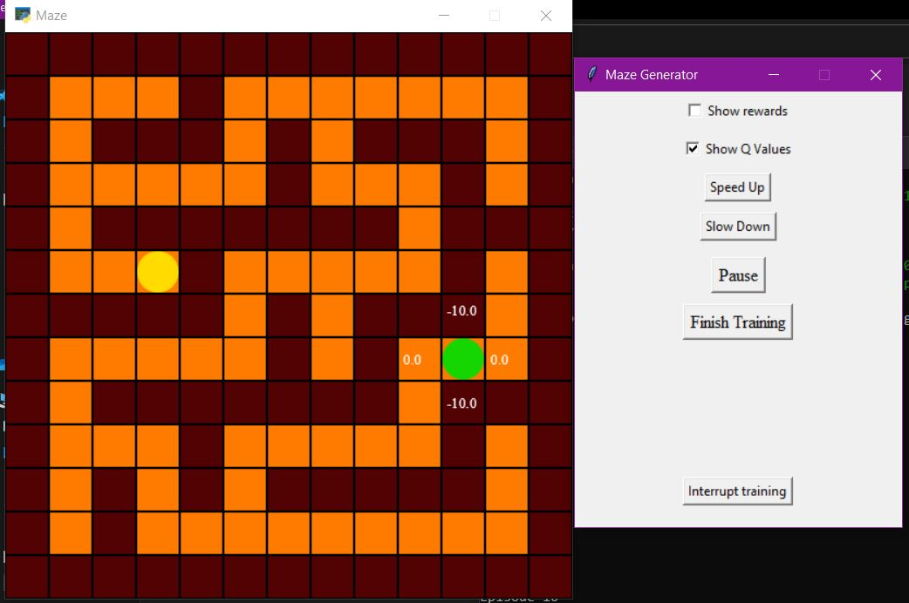

Q Learning Maze Solver
- Solves a maze using Q learning, a type of reinforcement learning
- Language: Python
- GUI: Pyglet and Tkinter
- Github Repo
- Youtube Video
Using reward-based reinforcement learning, the agent learns to solve the maze. There is first a maze generator, that allows users to generate various types of mazes. The user then sets the parameters for the Bellman Equation and then the agent trains. The UI allows users to view Q Values in real-time. This app helps us visualize the entire process of Q Learning to build intuition for deep Q networks.
  